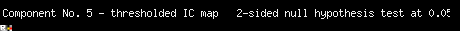
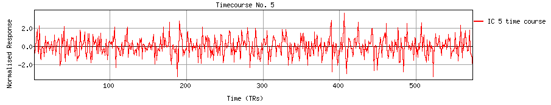
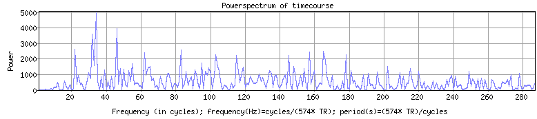
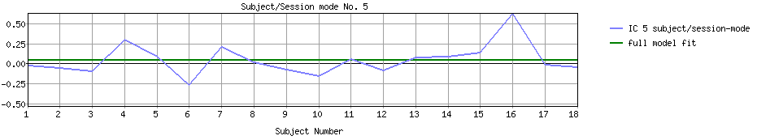
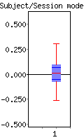
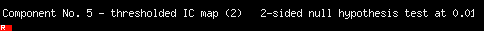

<
-
>
MELODIC Component 5
4.48 % of explained variance; 3.43 % of total variance

Temporal mode


Sessions/Subjects mode


GLM (OLS) on subject/session-mode
GLM β's
F-test on
full model fit
Contrasts
PE(1):
0.05
F = 1.17
dof1 = 1; dof2 = 17
p < 0.29519
(uncorrected for #comp.)
COPE(1):
COPE(2):
z =
z =
1.05 ;
-1.05 ;
p < 0.14759
p < 0.85241

This page produced automatically by
MELODIC
Version 3.15 - a part of
FSL - FMRIB Software Library
.